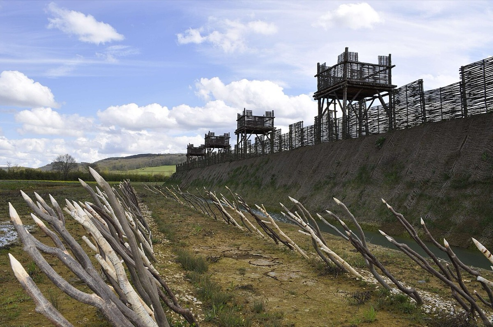
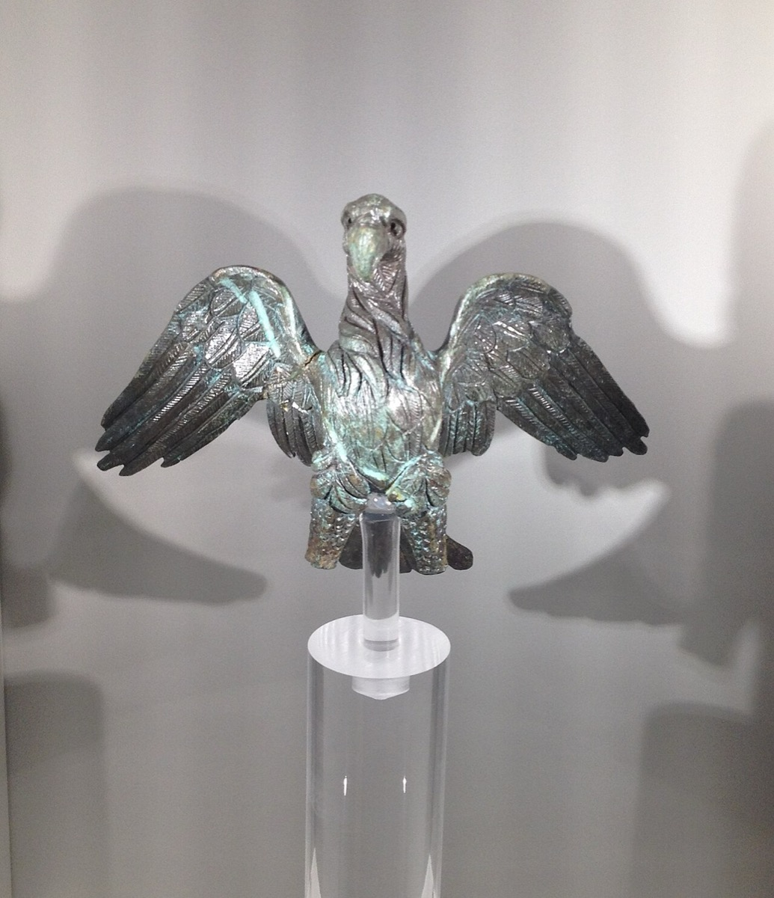
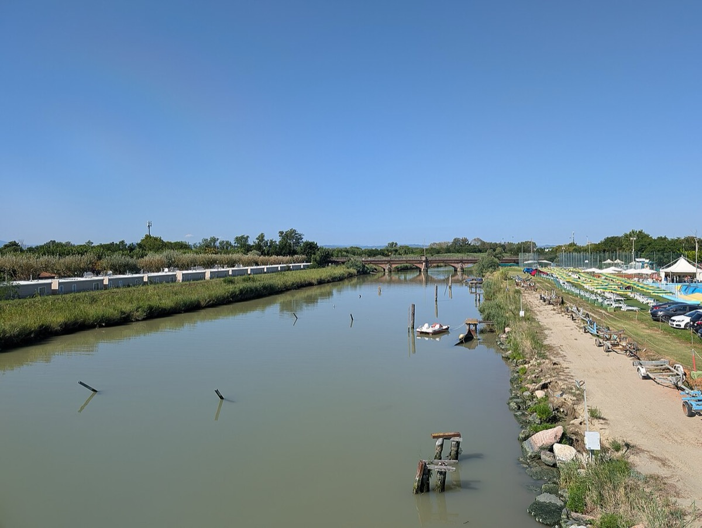
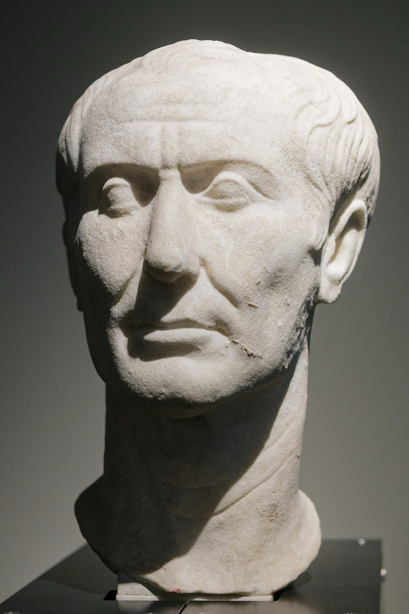

カエサルを読む判断軸は二つである。第一に、前50〜前49年の危機で渡河の主因が兵権空白の回避だったかは、Cicero 書簡の話題頻度だけでは判定不能である。第二に、Cicero が前54年に記した負の収奪見通し（銀なし・戦利は奴隷のみ）は第二次ブリタニア遠征の中止条件ではなく、遠征は同年に完了した。
改稿日 2026年11月11日（初稿 2026年9月26日）。生年は通説の前100年7月12日または13日を基準とし、前102年説は諸説として併記する。 年表の満年齢はすべて手計算で上書きしている（西暦4桁の ageAt は紀元前では動かない）。規則は次のとおり。 前N年の満年齢 = 100 − N。誕生日（7月）前の出来事はさらに −1。 例: 前44年3月15日は 100−44−1 = 55歳。前58年夏以降は 100−58 = 42歳。 前46年のユリウス暦改革より前の日付は当時のローマ暦であり、季節とずれていた点に注意する。 検証の主軸は Cicero の同時代書簡と本人の Commentarii である。古典伝記は Suetonius / Plutarch / Appian を使う。兵権問題の近代研究は Morstein-Marx 2007 を使う。
先に結論を置く。
1. 兵権空白が渡河の主因かどうかは、いまの証拠では判定不能である。 訴追恐怖説の棄却は Morstein-Marx 2007 の線上にある32。本ページの差分は、Ad Atticum 第7巻全24通の符号化表を公開した点である。符号 A（不在立候補または軍）は7通、符号 B（カエサル訴追計画）は0通である38。これは Cicero 書簡コーパス内の話題頻度であり、カエサル本人の意思決定の因果までは検証しない。判定表は本文IVにある。
2. ブリタニア遠征の拡大は収益見通しの改善では説明できず、打ち切りはガリアの騒乱と穀物不足で説明できる。威信が拡大を説明するかは判定不能である。 前55年は2個軍団・輸送船約80隻だった。前54年は5個軍団・800隻超に拡大した3940。その間に収益見通しは改善していない。本人の記述は銅貨・金貨・鉄の棒と錫・鉄の産出に留まり、Cicero は「銀は一銭もない」と書いた4034。帰還の理由として本人が記すのは、戦利の不足ではなくガリアの突然の騒乱である40。判定表は本文IIIにある。
3. 債務と略奪は燃料であり、内戦交渉の主語ではない。 Appian がヒスパニア・ウルテリオル属州総督就任前後の文脈で伝える債務自己評は約2,500万セステルティウスである（通例の文脈年代は前61年頃）。Crassus の保証は830タレントである52。符号化表で多い話題は負債額ではなく、不在立候補と軍の所在である38。
読者と判断：退任後に訴追されうる権力者の行動を読むとき、免責そのものではなく「強制力（兵権・軍）が途切れる空白」が決定要因かどうかは、書簡の話題頻度だけでは足りない。比較可能な他の総督の行動、または渡河直前の本人側一次記録が要る。遠征の拡大と打ち切りを読むときは、収益見通し・威信・補給のどれが判断を説明するかを、前55年と前54年の規模・目的・帰還理由の対比で検証できる。
分解：物理的制約は軍団の補給である。歩兵約4,200人の軍団で小麦は1日あたり約3.5〜3.9トンを要し、騎兵と駄獣を含めると約6.4〜7.2トンに達する（Polybius の配給量からの換算・推定）37。陸上輸送だけでは数日分しか運べないため、作戦範囲は河川・海岸と現地徴発から離れられない。お金の流れは国庫ではなく、奴隷売却・略奪・属州収入が兵の給与と本人の債務返済を賄う構造である。利得の帰属は兵士・徴税請負人（publicani）・本人の債権者側に寄り、元老院の大土地所有者側の拒否権と衝突する。法と強制力は、公職中の訴追免除と、退任から次の就任までの空白で私人がなる点に集約する。時間は、1年任期の政務官制度と複数年を要する軍事行動のずれである。
日付が確定した出来事だけを置いた。各項目は事実、具体、なぜそれが後を決めたかの3層である。 期のボタンで絞り込める。日付の右は、リード文の規則で手計算した満年齢である。
記述の分担は次のとおりである。ガリア戦争・内戦・暗殺の通史は世界史 12章に置く。本ページは兵権空白と収奪判断の検証に必要な事実だけを置く。
見出しと主張の対応は次のとおりである。I・II は分解の前提。III は主張2の検証。IV は主張1の検証（符号化表を含む）。V は両主張のあとの帰結である。
ガイウス・ユリウス・カエサルは、通説では前100年7月12日または13日にローマで生まれた。生年は前102年とする説もあり、本ページは諸説と明示する189。叔母 Julia の夫が Gaius Marius であり、マリウス派の系譜が幼少期の政治位置を決めた2。
前82年、Lucius Cornelius Sulla の勝利後、カエサルは Cornelia との離婚を命じられ拒否した。神官職と財産の一部を失い、潜伏・逃亡した12。前75年頃の海賊事件では、Suetonius が身代金50タレントを、Plutarch が要求20タレントからの自己引き上げを記す12。
官職階梯は次のとおりである。財務官は前69年。按察官は前65年。最高神祇官は前63年。法務官は前62年。ヒスパニア・ウルテリオル属州総督は前61年である18。Appian はヒスパニア・ウルテリオル属州総督就任前後の文脈で、「無一文になるにもなお2,500万セステルティウスが必要だ」という本人の言葉を伝える（通例の文脈年代は前61年頃）。Plutarch は Crassus が830タレントを保証したと記す526。前60年の第一回三頭政治と前59年の執政官就任は、この負債を長期属州収入で回収する枠組みを開いた522。
『ガリア戦記』第1巻は、ヘルウェティイ追撃中にソーヌ河経由の穀物が使えなくなり、ビブラクテへ進路を変えた経緯を書く3。Polybius の配給量からの換算では、歩兵約4,200人の軍団で小麦は1日あたり約3.5〜3.9トン、騎兵と駄獣を含めると約6.4〜7.2トンである（推定）37。陸上輸送だけでは数日分しか運べないため、作戦は河川・海岸と現地徴発に依存する。
主な期日は次のとおりである。前58年はヘルウェティイとアリオウィストゥス。前57年はベルガエ。前56年はウェネティ。前52年はアレシアである3。アレシアでは、内環（対市街の circumvallatio）約11ローマ・マイル（BG 7.69）、外環（対救援軍の contravallatio）約14ローマ・マイル（BG 7.74）の二重包囲を敷いた（本人申告）3。死者・奴隷化について Plutarch は各100万人と書くが、これは古代の修辞的総計であり、現代推計は規模を下げる方向が多い（諸説・推定）220。

検証する命題は、遠征規模の拡大と打ち切りの時期を、収益見通し・威信・補給のどれが説明するかである。比較の軸は、前55年と前54年の規模・本人申告の目的・収益の記述・帰還の理由である。同じ前55年のライン渡河を、戦利を目的にしない短期作戦の対照に置く。
| 項目 | 前55年 | 前54年 |
|---|---|---|
| 規模 | 2個軍団。輸送船約80隻と騎兵用の輸送船18隻（BG 4.22）39 | 5個軍団と、大陸に残した騎兵と同数の騎兵。冬に輸送船約600隻と軍船28隻を建造し、私船を含め800隻超（BG 5.2、5.8）40 |
| 本人申告の目的 | ガリアの戦争に島から援軍が来たことと、住民・港・上陸地の偵察（BG 4.20）39 | 人質を取り、毎年の貢納額を定めた（BG 5.22）40 |
| 収益の記述 | 戦利の記載なし39 | 本人は銅貨・金貨・鉄の棒の通貨と、内陸の錫・沿岸の鉄を記すだけ（BG 5.12）40。Cicero は銀なし・戦利は奴隷のみと書く（Att. 4.16）34 |
| 威信 | ライン渡河（18日間、BG 4.19）とブリタニアの人質を含む戦果に、元老院が20日間の感謝祭を議決（BG 4.38）39 | 本ページでは確認していない |
| 帰還・打ち切りの理由 | 本表では扱わない | ガリアの突然の騒乱に備え大陸で越冬した（BG 5.22）。同年はガリアの旱魃で穀物が不作で、冬営を多数の部族に分散した（BG 5.24）40 |
収益見通しから見る。前55年の偵察のあとも、本人の記述に戦利の見込みは現れない。前54年6月頃（通説では6月24日前後）、Cicero は Atticus へ次のように書いた。「島への接近は驚くべき断崖に守られている。銀は一銭もなく、戦利の見込みは奴隷だけだ。文学や音楽に通じた奴隷は期待できない」34。この時点で第二次遠征は準備中であり、その後に実施された。見通しが改善しないまま規模は2個軍団から5個軍団へ拡大したため、収益見通しの改善は拡大を説明しない。Suetonius は真珠を求めて侵攻したと「言われる」と書くが、約160年後の伝聞である1。反証条件 (a) は満たさない。
打ち切りを見る。同年10月24日受信の手紙で、Cicero は Quintus とカエサルからの9月25日付書簡を要約した。「ブリタニアは落ち着き、人質を取り、戦利は無く、貢納を課して軍を帰還させる」35。本人は帰還の理由をガリアの突然の騒乱とし、不作で冬営を分散したと記す40。戦利の不足を帰還理由とする記録は無く、反証条件 (b) は満たさない。ただし理由の記述は本人申告である。属州も継続駐留も生まれず、次のローマ軍上陸は西暦43年の Claudius 期である36。
威信を見る。前55年の作戦は戦利を伴わない2件の短期作戦だった。それでも元老院は20日間の感謝祭を議決した39。反証条件 (c) は満たさない。しかし本人が増強の理由として威信を記した文はない。感謝祭と増強の時間の順序だけでは因果を特定できないため、この部分は判定不能とする。渡海コストと奴隷売価の差も一次数値がないため、費用対効果の因果は判定不能である。
前54年に Julia が死去し、前53年に Crassus がカルラエで戦死した。三頭の私的均衡が消えた26。前52年、十人護民官法がカエサルに ratio absentis を認めた。これはガリアのプロコンスル職から次の執政官へ、兵権を途切れさせずに移すための特権である3132。Pompeius の Lex Pompeia de iure magistratuum（前52年）は原則として本人出頭での立候補を求め、不在立候補の扱いに争いを残した31。

先行研究との差分。訴追恐怖説の棄却そのものは Morstein-Marx 2007（および Gruen / Shackleton Bailey）の線上にある32。Morstein-Marx は Att. 7.9 の戦略列挙に訴追という第三の選択肢が無い点を質的に論じた。本ページの差分は、第7巻全24通の話題符号化規則と書簡別判定表を公開して件数比較を再現可能にした点である。新しい一次史料の発見ではない。符号化は話題頻度の測定であり、主張1の因果判定そのものではない。
符号化規則。コーパスは Cicero Ad Atticum 第7巻（前50年10月〜前49年2月。英訳全24通）である38。各書簡を次の3符号のいずれか1つに分類する。A＝不在立候補または軍の保持・解散を危機の論点として扱う。B＝カエサル訴追計画を危機の論点として扱う。C＝AでもBでもない。AとBが同一書簡に共存する場合は両方を数える。語彙ヒットは補助であり、頻度表の正本は下表である。頻度表は主張1の因果を証明しない。
| 書簡 | 符号 | 根拠（英訳の該当箇所） |
|---|---|---|
| 7.1 | A | candidate who is away from Rome / disbanding of his army38 |
| 7.4 | A | stand as a candidate in his absence38 |
| 7.7 | A | candidature of a man who keeps his army / allow his candidature according to the law38 |
| 7.8 | A | prefer to keep his army and his province。condemnation は過去の有罪判決への不満であり B ではない38 |
| 7.9 | A | admit Caesar as a candidate while he keeps his army など、立候補と軍の組合せを列挙3338 |
| 7.11 | A | retain an army without sanction38 |
| 7.17 | A | admitted a candidate（条件交渉の継続）38 |
| 上記以外17通 | C | 渡航・私信・開戦後の情勢報告など。A・Bの論点を主語にしない38 |
| B 該当 | 0通 | prosecut / impeach / trial をカエサル訴追計画として扱う書簡は無い38 |
集計は A＝7、B＝0、C＝17（合計24）である。補助の語彙ヒット（英訳全文）は absent/candidat/ratio＝24、prosecut/impeach/trial＝0である。これは Cicero 書簡内の話題頻度である。本人の『内乱記』冒頭は護民官の扱いと条件交渉を主語にし、訴追回避を主因として明記しない4。ただし同冒頭も、兵権空白が渡河の主因だと因果まで断言する文ではない。Suetonius の訴追説は後世の一整理である1。したがって主張1（渡河の主因は兵権空白の回避である）は、頻度表だけでは判定不能のままである。
前49年1月10日（通説）、カエサルはルビコンを渡った123。軍解散要求を受け入れて私人がなれば、兵権も交渉力も同時に消える。渡河は観測事実である。主因の帰属は主張1の判定不能と同じく、比較対照または本人側の優先順位記録が揃うまで保留する。

共和政末期の通史（内乱の1世紀・独裁官就任・暗殺・帝政への移行）は世界史 12章「ローマ 共和政から帝政へ」が扱う。本節はその通史を繰り返さず、主張1・2の検証に必要な帰結だけを置く。
内戦の主な決戦場は次のとおりである。前48年はファルサロス。前47年はゼラ。前46年はタプソス。前45年はムンダである41。前46年にユリウス暦（365.25日）を施行した。属州統治と市民権拡大を進めた。債務整理と植民市建設も進めた。元老院定員は約900人へ拡大した110。
前44年2月頃の終身独裁官（dictator perpetuo）就任は、一時的非常事態の終わりを見せなかった18。同年3月15日に Brutus・Cassius ら60人超が Pompeius 劇場の会議場で襲った。Suetonius は刺し傷23箇所を記す。致命傷が胸部の1箇所だとするのは医師 Antistius の判定である115。遺言で Octavianus を養子としたが、Antonius との権限分担は生前に固定されなかった17。

| 指標 | 数値 | 時点 | 出典・注 |
|---|---|---|---|
| 生年 | 前100年7月12/13日 | 通説 | 前102年説あり（諸説）19 |
| 没年・年齢 | 前44年3月15日 / 55歳 | 暗殺当日 | 満年齢はリード文の規則1 |
| 債務（自己評） | 約2,500万セステルティウス | ヒスパニア総督就任前後（通例・前61年頃） | Appian。文脈年代5 |
| Crassus の保証 | 830タレント | 同左の文脈 | Plutarch 両伝記26 |
| 軍団の小麦需要 | 約3.5–3.9トン/日 | 歩兵4,200人基準 | Polybius 換算・推定。騎兵込で約6.4–7.2トン37 |
| アレシア内環 / 外環 | 約11 / 14ローマ・マイル | 前52年 | BG 7.69 / 7.74（本人申告）3 |
| ブリタニアの銀 | なし（Ciceroの記述） | 前54年6月頃 | Cicero Att. 4.1634 |
| ブリタニアの戦利 | なし（貢納のみ） | 前54年9月 | Cicero Att. 4.1835 |
| ratio absentis | 十人護民官法で承認 | 前52年 | 兵権連続の制度装置3132 |
| Att. 7 話題（兵権側） | 7通 / 24通 | 前50.10–前49.2 | 不在立候補または軍。頻度であり因果ではない38 |
| Att. 7 話題（訴追側） | 0通 / 24通 | 前50.10–前49.2 | カエサル訴追計画を論点とする書簡38 |
| Att. 7 語彙（英訳） | 24 / 0 | 同左 | absent・candidat・ratio の合計 / prosecut・impeach・trial の合計38 |
| ガリア死者・奴隷 | 各100万人 | 古代総計 | Plutarch。古代の記述。現代推計は低い220 |
| 刺し傷 | 23箇所 | 前44.3.15 | Suetonius1 |
| 致命傷 | 1箇所（Antistiusの判定） | 前44.3.15 | Suetonius が伝える医師の所見115 |
| ユリウス暦 | 365.25日/年 | 前46年施行 | Suetonius / 暦史110 |
類型は主張1・2の検証で残った失敗に限定する。旧稿の「平定遅れ／ブリタニア／終身独裁／継承／恩赦」の5件列挙は使わない。
Ad Atticum 第7巻では、危機の話題として不在立候補と軍の保持・解散が多い（7通対0通）38。Suetonius は約150年後に訴追恐怖を一因として整理する1。同時代の話題頻度と後世伝記の説明は一致しない。ただし話題頻度の偏りは、渡河の主因が兵権空白だったことの証明には足りない。主張1は判定不能のままである。
主張2は、遠征の拡大が収益見通しの改善によらず、打ち切りがガリアの騒乱と不作によることを支持した。裏側の損失は、5個軍団・800隻超に拡大した第二次遠征が属州収入を生まなかった点である。結果は戦利なし・貢納のみ・軍の帰還であり、次の上陸まで約97年空く3536。測れる指標は属州化の不在である。渡海コストと売価の差は一次数値がないため金額では測れない。
ratio absentis は前52年に一度認められた。Pompeius 側の法改正と元老院の軍解散要求が、この特権の運用を争点化した31。Cicero のゲーム木（Att. 7.9）は、不在立候補の許否と軍の所在の組み合わせを列挙するが、成立した妥協はない33。空白を武力で塞いだ帰結がルビコンである23。
| 失敗 | 案件 | 時点 | 測れる損失・指標 |
|---|---|---|---|
| 1 説明の不一致 | Att. 7 の話題頻度 vs Suetonius 訴追説 | 前50–前49 / 後世 | 話題 7通対0通。後世は訴追を一因化。因果は未判定381 |
| 2 中止なき遠征の無収入 | 第二次ブリタニア | 前54 | 属州化なし。完了後も銀・貨幣戦利なし3536 |
| 3 手続で空白を閉じられない | ratio absentis の運用争い | 前52–前49 | 妥協不成立。内戦開始3123 |
検証に必要な範囲に限る。
三人称の Commentarii。『ガリア戦記』『内乱記』はカエサルを「彼」と書く。戦場日誌に見えるが、配布を前提にした政治文書である3411。ブリタニアの成果を人質・貢納・地理情報として書く一方、Cicero の私信は銀なし・戦利なしを別系統で残す。
既成事実と法の補強。ルビコン渡河は、手続の完了を待たず現場で兵権を保持する型である。法的正当性は後から Commentarii と元老院工作で補強する14。
clementia。内戦後の恩赦は Sulla との差別化ブランドだった。同時に、動機を持つ元老院議員を物理的に除去しなかった121。
veni, vidi, vici 「来た、見た、勝った」。前47年ゼラ戦後の戦報。Plutarch / Suetonius 系12
主張の検証に直結する発言に限った。出典未確定の言い回しは隔離する。
ガリア戦争の直接の利得者は次の三者である。給与と略奪分配を受ける兵士。属州徴税に関与する publicani。債務を回収可能にした本人と保証人 Crassus である52。損失側は、奴隷化・徴発の対象となったガリアの諸集団、および兵権の集中を拒む元老院の大土地所有者層である。ブリタニアでは銀・貨幣戦利が成立せず、属州収入もゼロだった3435。内戦後は、恩赦で生存した共和派と、遺言で浮上した Octavianus が次の分配を争った。Antonius は葬儀と書類を決める位置にいた75。


.jpg){kind=link}